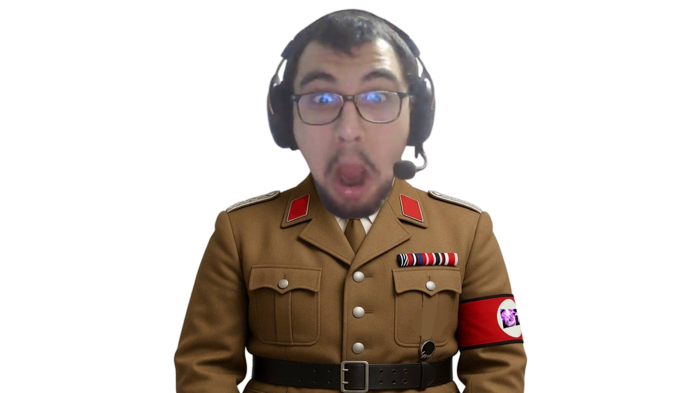
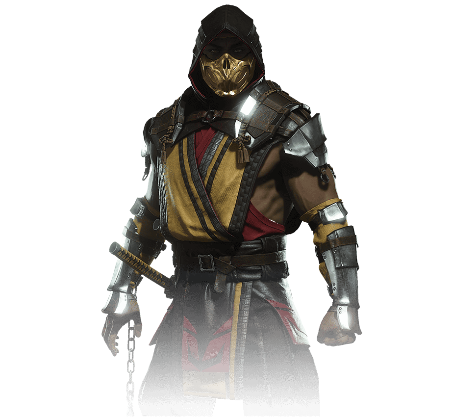

THE BEST GAME IN THE WORLD
A super fun multi-genre game - TDS and platformer! Really engaging story and funny cameos! Tons of endings that explore the universe's lore! (If the game file is flagged as a virus, don't worry. That often happens with files from GameMaker. After all, Hotline Miami and Katana Zero were made with it, so it's trustworthy. More details on GameJolt!)


Scorpion>MK11
Hanzo Hasashi (Japanese: 波佐志 半蔵 Hasashi Hanzo)[3], better known as Scorpion (Japanese: 全蠍人; Zenkatsujin; "Full Scorpion Man")[4], is a resurrected ninja in the Mortal Kombat fighting game series as well as the mascot of the games. He is one of the very few original characters debuting in the first Mortal Kombat arcade game. He holds the distinction, along with Raiden and Sub-Zero (in one form or another), of appearing in every generation of Mortal Kombat games as a playable character. Throughout the series, Scorpion has been a misguided antagonist after his resurrection, following those on the side of evil out of revenge and anger over the death of his family and clan. After being restored to his Human form and learning the truth about their demise, he has been a recurring supporting character for the series.
Learn more